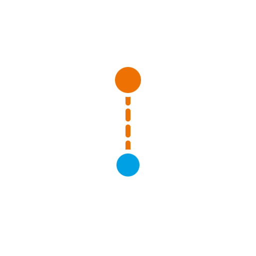

fifteen steps from a coin flip, via light, to a qubit
a hands-on workshop · you drive, the slides guide
Open the tutorial on your own screen — every scene there is interactive, and playing with it is the workshop.
Per scene: a short framing here, a few minutes of hands-on play there, then we regroup on what surprised us.
The creed of the day: we never add anything quantum. We only keep details — and let light audit the books.
Brian Cox, challenged on BBC radio to state the rules inside a minute
Will Oliver & Jeff Grover on what quantum computing is
The promise of the day: you will not be asked to believe any of these. You build all four, with your own hands, starting from nothing but coin flips.
flip · count · bet · and refuse to be sloppy
the coins already in the room
Before you flip: what do you expect the pooled line to do?
Tap Flip ten times. Every tap lands on this screen.
The honest statement before flipping is a bet: 50%. The line tells us whether the bet was any good.
Your coin always lands the same way. Which way? Nobody knows — not even you.
Ten flips. Your own line is flat; the room's still says ½.
No luck in this coin at all — only ignorance. Same 50%.
Your phone now holds a coin with a bias you cannot see.
Ten flips again. Same pooled forecast?
Both rounds say 50%. Do you believe the same thing in both?
A coin keeps one kind of secret: which way it leans. Hold that.
One number per participant: the fraction of heads, shadowed on the axis. The room's is their average — ½ in every round.
The second number, ± E(sd), lifts each coin off the axis. Round A rises to the rim. Round B never leaves the axis. Round C: some rise, some stay.
One number cannot tell luck from ignorance — two can.
Dashed: the room as one anonymous bag of flips, ± sd — every round climbs to the rim, ≈ ½.
Solid: the bookkeeper knows whose flip is whose, ± E(sd). Round A: the paths coincide — the luck is in the throw and stays: statistical (aleatoric). Round B: the solid path never leaves the axis — only a fact not yet learned: systematic (epistemic).
Round C ends partway inside. What information removes was epistemic; what survives is aleatoric.
Odds on the x-axis. Bandwidth — the spread you expect — on the y-axis.
Every fully known coin lands on the same arc.
The mystery coins sit in the corners and pool to the centre. A coin you only know on average lands inside. One number added; a shape appeared.
Slide p. The dot never leaves the arc.
Every coin you fully know sits on the rim. Every coin you don't sits inside.
Technical aside: the arc length between two beliefs is how well a run of throws can tell them apart.
Believe q₁ with some weight, q₂ with the rest: your belief slides along the chord.
All chords together fill the interior — the half-disk is the space of every honest belief.
Rim: randomness that stays. Depth: ignorance that flips can cure.
The pointer: centre to state, angle 2θ.
The needle: the same arrow seen from the state, angle θ — always-H and always-T at right angles.
Add the components, then square. Hold on to that.
TWO DOUBTS, STILL OPEN
(i) Why bandwidth, of all second numbers?
(ii) Half a disk: half of what?
odds across · bandwidth up
a lamp · two sheets · a detector · and one photon at a time
the beams already in the room — angles still secret
A lamp, one striped sheet, a detector.
Turn the sheet anywhere: 50%, 50%, 50%. No angle lets everything through, none stops it.
So a sheet is just a grey filter that halves the lamp? Add a second sheet.
Sheet 1 halves the lamp, as before. Now a second sheet behind it.
With the same stripes it costs nothing more. Turn it crosswise and the detector goes dark. A grey filter would not care.
So light has an H and a T too: behind a horizontal sheet it says yes to “horizontal?” every time — always-H; behind a vertical one, always-T. A known coin, made of light. One more sheet first.
Sheet 1 horizontal, sheet 2 vertical: crossed, 0%.
Slide a third striped sheet between them, diagonal: 25%. An extra obstacle, and light comes back.
A grey filter could never do this. Something in the light has a direction, and the middle sheet turned it. Why — the next two slides.
The middle sheet turned the direction — by throwing three quarters of the light away.
Light is a wave that wiggles sideways as it flies: an H wiggle of size a and a V wiggle of size b, both at once, locked by a² + b² = 1.
That pair (a, b) is all polarization means. A sheet keeps only the wiggle along its slots: fraction a² of the brightness passes.
Insert a sheet half-way: it keeps only the wiggle along its slots — cos of the angle as long, cos² as bright.
Only the angle between the wave and the slots matters: φ − β.
The sheet keeps cos(φ − β) of the wiggle; the detector, which reads squares, sees cos²(φ − β).
Aligned: everything. Crossed: nothing. 45° apart: exactly half — the coin's ½, back in glass.
Everyone holds the same beam, tilted 45°: as much H as V. Each photon meets the sheet — a click or no click, 1 or 0.
Click by click, every beam draws its path — and the room climbs the rim to (½, ½), as it did with the coin.
Same beam, same sheet, for everyone — the fair beam.
Every seat holds a beam that is either H or V — fixed, and secret. Same horizontal sheet.
An H beam clicks every time; a V beam never does. Each path shoots to a corner — and the room pools to the floor at ½.
No luck anywhere, only a fact nobody knows — the mystery beam.
Every seat holds a beam with its own secret tilt — nobody has the same one. Same horizontal sheet.
Each beam clicks its own fraction of the time: every path climbs to its own point on the rim. The room pools inside.
One sheet, three rooms: rim, floor, inside — the secret beam.
Solid: the room through the 0° sheet. Dashed: through the 45° sheet.
Turn the sheet 45°: the pointer sweeps 90° and lands on the dashed one.
The half-disk was folded. Bandwidth has a sign; the 45° sheet reads it.
A coin took one question; light takes a whole dial — more room for a secret.
Through the 0° sheet the room reads (p, E(sd)). Turn the sheet 45° and the disk turns 90°.
So the 45° sheet reads (E(sd) + ½, ½ − p): its probability is our bandwidth, plus a half.
Subtract ½ from the 45° answer and you hold E(sd) — sign included. Nature keeps our books, and signs them.
Every beam has a triangle over the T–H diameter: legs √p and √(1−p), the numbers the 0° sheet reads. Its twin below has the same legs — and the opposite turning.
The turning is the sign of E(sd). The 0° sheet cannot see it; the 45° sheet reads it (scene 11). Dropping it folded the circle into our half-disk.
The fair beam at 45° sits on top; the 135° beam is its twin — same ½ through the 0° sheet, 100% against 0% through the 45°. Doubt (ii): half of the Bernoulli circle.
A sheet at angle φ is a diameter at 2φ. Its two ends: the beam that always passes, the beam that never does. A photon is never asked where are you? — only which end?
The odds are drawn: the squared chord to the opposite end. That is Malus’s cos²(φ−β) from scene 7, as triangle geometry — and Thales makes yes and no sum to 1.
The flat diameter is the 0° sheet, the coin flip. Turned 90° it is the 45° sheet. Every angle on the dial is a diameter too.
The 0° sheet’s two ends sit on the mirror line. A beam and its twin keep the same distance to both — the same fraction, the same bandwidth size, round after round.
Tilt the diameter and the twins split: the 45° sheet of scene 11, as geometry. The flip is not weak — it is symmetric under exactly the reflection the sign encodes.
A coin owns one question and lives on the half-disk. A sheet on a dial owns them all and lives on the circle.
TWO DOUBTS CLOSED · ONE OPENED
(i) Why bandwidth? The 45° sheet reads it: p₄₅ − ½.
(ii) Half of what? Of a circle: every beam has a mirror twin.
(iii) A block of glass sends two different beams to one point. Again.
one sheet, one diameter · a dial, all of them
no stripes · nothing lost · a third question · Poincaré’s sphere
the same beams — one more question to ask them
The sunglasses bench. Sheet 1 diagonal, sheet 2 diagonal: 100%.
Turn sheet 2 horizontal: 50%. Crossed: 0%. Somewhere, the light is all through; somewhere, none.
Nothing new. Remember the lamp alone: 50% at every angle, no direction to find. Two signatures — hold both.
Sheet 1 diagonal. Between the sheets a block of glass, no stripes. Turn sheet 2: the whole pattern of scene 7 — turned by 90°.
And the beam is as bright behind the glass as before it. The third sheet turned the direction by asking, and kept a quarter; the glass turns it by transforming.
A second glass turns it back, as if nothing stood there. A turn can be undone; a sheet’s loss cannot.
Same bench, sheet 1 diagonal. The same glass, now a quarter of the turn: still no stripes, nothing absorbed, the beam as bright as before.
Turn sheet 2: 50%, 50%, 50%. Sheet 2 can no longer find the direction sheet 1 gave — though nothing was lost.
The surprise. Lamplight’s answer from a beam that had a direction — and the glass asked nothing, took nothing.
“The glass scrambled it — made it lamplight.” Test that: add a second glass, built the other way round.
Turn sheet 2: 100%, 50%, 0%. The direction is back. Now the same with lamplight: 50% — still 50%.
Scrambling cannot be undone. This could. The light after one glass only looked like lamplight.
Light · wave: an H wiggle and a V wiggle, both still there, full size.
Behind the glass the V wiggle runs a quarter turn late. In step: a line. Out of step: the tip goes round — any sheet keeps half of a circle.
A striped sheet sees how big the two parts are, never when they peak. Two things to know about the light now — the disk has room for one. Stokes (1852) kept a third tally for it.
A coin at ½ twice over gave us the bandwidth axis. An H-beam through the floor unfolded the disk.
Tilt: lamplight stays at the centre — inside. The glass-light rises to the pole — on the surface; its twin to the other pole.
Same 50% from every striped sheet, two different places on the ball. Pure on the surface, mixed inside. Bernoulli, Poincaré, Bloch — one ball.
Three questions per beam now: the 0° sheet, the 45° sheet, and reversed glass + 45° sheet.
The fair beam climbs to the top of the rim, as the fair coin did.
Tilt the disk: it stays on the equator. The third question answers ½ — a linear beam has no third number.
Every seat: H or V, nobody knows which. Each path shoots to a corner; the room pools to the centre.
Tilt the disk: the room does not move. The centre is inside the ball.
A mixture — lamplight’s place. Keep your eye on ‘inside’ for the next two rounds.
Every seat: a sealed beam — a secret, and no word on how it was made. The seats land inside the disk, short of the rim. Mixtures, surely.
Tilt the disk: every seat lifts to the surface. Pure from the start — the disk only showed their shadow.
Only the room stays inside: it doesn’t know which seat is which. Seat-pure, room-mixed.
The fair beam through the glass. 0° sheet: ½. 45° sheet: ½. Every seat at the centre — the mystery room, to a striped sheet.
Tilt the disk: the third question answers 1. The whole room is at the pole, on the surface.
The sealed round’s extreme case: a shadow dead on the mystery room’s point — two lights, two heights.
The secret the coin had no room for: fair to every sheet, yet fully known.
Scene 5’s needle, (√p, √(1−p)), runs on a unit circle at angle α; the pointer at 2α. Squaring doubles the angle: sheet 45°, disk 90° — derived.
For light the needle is the wave: a and b are the sizes of the H and V wiggles; the glass adds their delay δ. (a, b·eiδ) is Jones’s vector: δ = 0 the equator, a quarter turn the poles.
Only the relation between the parts is physical: a sign on the disk, a delay on the ball. One lap, (a, b) → (−a, −b): the same beam. Cox’s little quantities: amplitudes.
Each of you is one photon. Press once per round.
Four rounds of φ: the room's own clicks draw the fringe. A mixture source draws nothing.
One click at a time — and still cos²(φ/2). Each photon carries the whole ball.
Coin → half a disk. Every sheet angle → the disk. A delay → the ball. ℝ → ℂ, rebit → qubit.
Four claims, taken on faith this morning. All four built.
Two seats in this room left one source together. Neither knows it. Alone, each is a fair coin at every angle.
The only detector is a comparison. Each round, everyone gets the same sheet; every pair that disagrees is struck.
276 pairs, halved each round — until two remain. Two?
Two pairs survived. One is entangled. The other shares a card, written before any question was asked.
Now ask them different angles — 0°, 60°, 120°. A card with three answers always has two alike: the same answer at least ⅓ of the time.
The photons: cos²(60°) = ¼. No card can be written for that — and no single seat ever showed it.
One pure beam. Each participant bumps their delay by a random amount.
Every copy is still pure; the room's average is not.
That is what a noisy room does to a qubit. Thank you for being the noise.
The sheet projects the needle: add the components along the sheet.
The light you see is the square.
At 45°: ½ + cos θ sin θ. Half plus the signed bandwidth.
Beam angle θ; dot angle 2θ.
The 0° question and the 45° question use the same circle, a quarter turn apart.
Two beams, one dot under the horizontal question.
Turn the sheet to 45°: mirror images across the diameter.
A coin can be asked one thing. Light can be asked at every angle — and the answers fill the disk.